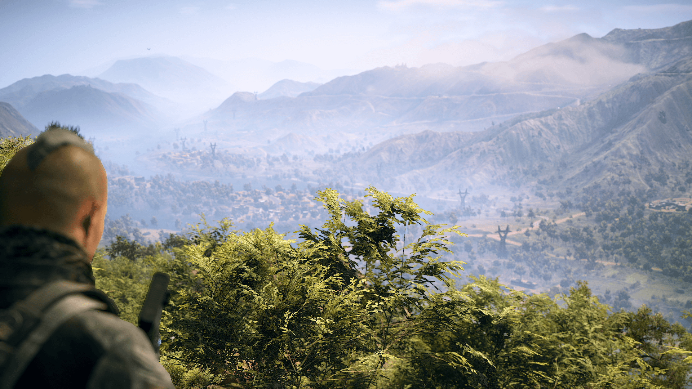

Having played plenty of Ghost Recon Breakpoint I can safely say somthing was lost in the intervening years. The sequel to Ghost Recon Wildlands just doesn't have anything like the beautiful & cohesive landscapes found in its predecessor. Maybe this comes from its setting being a completely fictional sci-fi New Zealand..., unlike Wildlands reality inspired Bolivia, which actually landed Ubisoft in a bit of hot water with that country's government over its portrayal of drug cartels & corrupt officials. I never took it as anything realistic, but I could see quite a few things that would irk anyone from Bolivia upon viewing. There's definitely a few stereotypes beign bandied about. Anyway, regardless, 4 years after it's release Wildlands still manages to be a very entertaining game, especially with a squad of friends in co-op. It really seemed they were on to something good, whichh is what makes the initial disaster that was Breakpoint even more confusing.